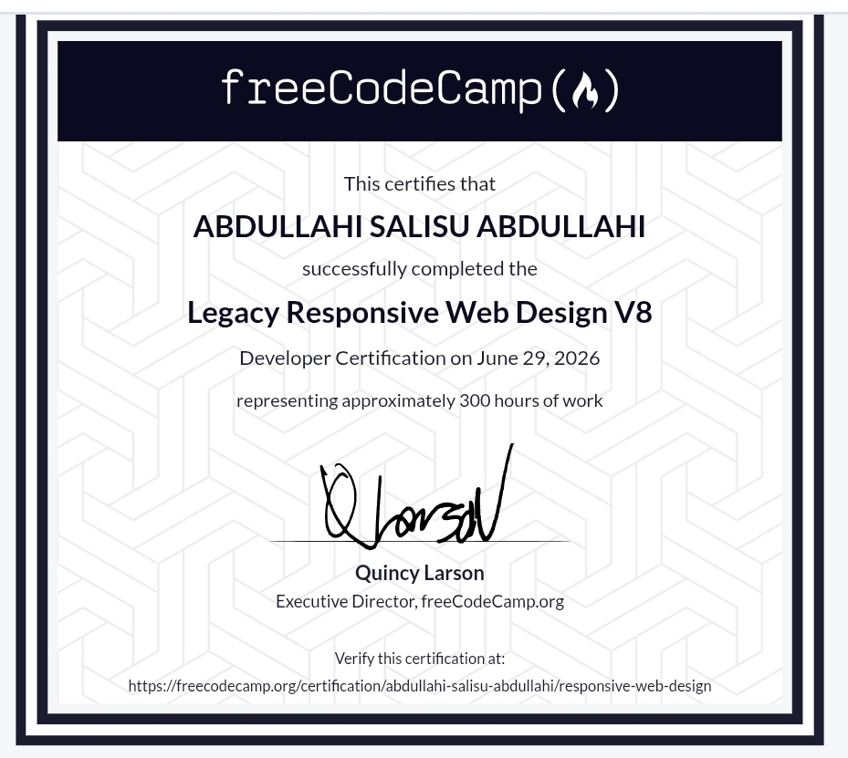

Abdullahi Salisu Abdullahi
Engineering reliable, high-performance web systems and native software logic.
System Profile
I am Abdullahi, a software developer focused on crafting structured, robust code architectures. I approach engineering with a systems-level mindset, ensuring that structural layout, backend runtime cycles, and interface logic operate seamlessly together.
Currently pursuing my Bachelor's degree in Software Engineering at Northwest University, Kano (YUMSUK) as a 200 Level student, I am leveraging my academic journey to deep-dive into standard software paradigms, algorithm design, and reliable web systems execution.
Academic Operations
B.Sc. Software Engineering
Active RunNorthwest University, Kano
Level 200 Undergraduate
Developing deep familiarity with database systems architectures, object-oriented principles, network configurations, and algorithmic complexity matrices.
Engine Competencies
Quantified operational mastery across essential web engineering layers, bypassing standard graphical badges for clean metric meters.
Production History
Core Engineering Portfolio System
This platform marks my primary public implementation milestone. Engineered purely from scratch without abstract UI templates, it features a complete component switching mechanism, modular viewport rendering, custom responsive scaling rules, and clean typography layouts.
Validated Certifications

Ecosystem Infrastructure
GitHub
Vercel
Netlify
Render
Development Philosophy
"Code should be legible, performant, and structural. Software systems show true intelligence not through visual decoration, but through pristine data rendering and robust optimization across any runtime environment."
My design principles prioritize raw terminal-speed access and logical architecture over heavy third-party framework layers. Every line of markup and logic must serve a clear purpose, ensuring that platforms scale seamlessly as processing loads evolve over time.
Strategic Vector
Construct complex web APIs and design highly scalable server processes via enterprise Node.js system implementations.
Integrate relational and distributed database management software securely into microservice network pipelines.
Engineer high-efficiency internal digital infrastructure tools to optimize application deployment tracks in corporate environments.
Establish Handshake
Open for technical alignments, engineering assignments, and collaborative codebase architecture.